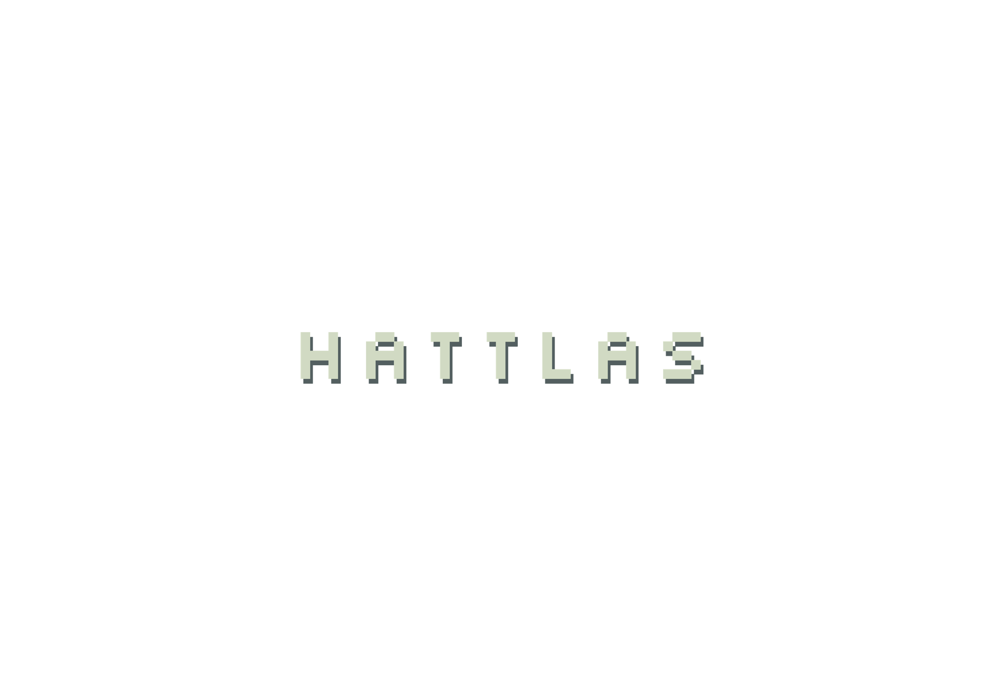

Acá iría la grilla de proyectos: imágenes, casos de estudio, links. Arrastrame desde la barra de título y cambiame de tamaño desde la esquina.
Un párrafo de presentación, estilo, trayectoria, clientes destacados. El contenido va acá dentro, como cualquier ventana de sistema operativo.
hello@ejemplo.com
Instagram · LinkedIn · Behance